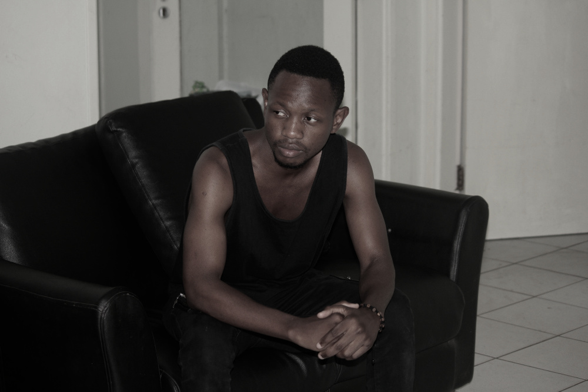

Carlos Fernandes Vesta

Carlos Fernandes Vesta
Curricullum Vitae
Endereço
- Bairro da Polana Caniço A, Rua do Gare de Mercadorias - Maputo
Perfil
- Qualidades - Actualmente trabalhando como Freelancer na área informática como Web Designer e Designer Gráfico
- Objectivo - Carlos é entusiasta por TIC's. Exerce a sua actividade com base nos mais elevados padrões de rigor, honestidade e respeito definidos pela lei e outros regulamentos
- Disponibilidade - Imediata
Competências-chave
- Capacidade de liderar uma equipe para um objectivo conjunto
- Encontrar soluções inovadoras para resolução de problemas
- Construir rede de relacionamentos abertos e troca de novas experiências
- Pontualidade e trabalhar sob pressão com prazos
- Extrovertido, bom ouvinte e responsável
- Conhecimento em Informática - Microsoft Office (Word, Excel, PowerPoint, Publisher, Outlook, Visio), HTML e CSS, Bootstrap, JavaScript (Básico), Python (Básico), Wordpress, WIX, Adobe Illustrator e Redes de computadores
- Capacidade de aprender e adaptar-se rapidamente
Educação
- 2020 - Ensino Superior: Universidade Pedagógica (UP - Maputo) Licenciatura em Ensino de Informática
- 2008 - Ensino Médio: Escola Secundária e Pré-Universitária 25 de Setembro de Quelimane Conclusão da 12ª classe
- 2006 - Ensino Básico: Escola Secundária Patrice Lumumba de Quelimane Conclusão da 10ª classe
Experiência Profissional
- 2020 - 2022 - Técnico Informático e Designer Gráfico na empresa Ishanga Lda (www.ishanga.co.mz )
- 2019 - 2022 - Técnico Informático e Designer Gráfico na empresa Ambiente do Zambeze (www.ambientedozambeze.co.mz )
- 2018 - 2022 - Técnico Informático e Designer Gráfico na empresa Dnet Work Services (www.dnetwservices.com )
- 2017 - 2022 - Técnico Informático e Designer Gráfico na empresa Lupa News (www.lupaanews.com )
- 2015 - 2020 - Técnico Informático e Designer Gráfico na empresa JP Recruitment Lda (www.jprecruitment.co.mz )
Idiomas
- Português: Falado e escrito correctamente
- Inglês: Falado e escrito razoavelmente
Actividades e Interesses
- Música
- Basquetebol
- Filmes
- Jogos virtuais